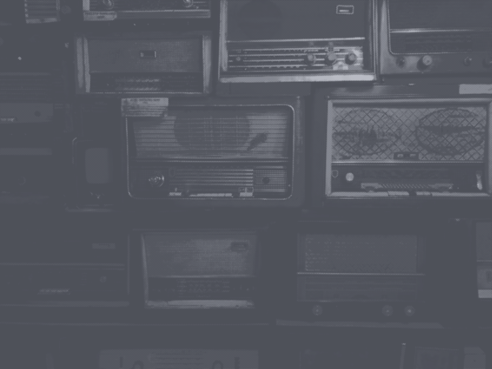

Звуки цифровой эпохи
Архив звуков технологий, медиа и городской среды 1980–2000-х годов
Архив звуков технологий, медиа и городской среды 1980–2000-х годов
Звуки технологий редко сохраняются, хотя они формируют память эпохи. Сигнал запуска компьютера, шум телевизионного эфира или звук модема — всё это часть цифровой истории.
Проект Revers собирает и сохраняет эти аудиофрагменты, превращая их в архив звуков цифровой эпохи.

Некоторые сигналы мы узнаем с первых секунд. Звук запуска системы, шум телевизора, сигнал модема или заставка приставки – попробуйте угадать, откуда они